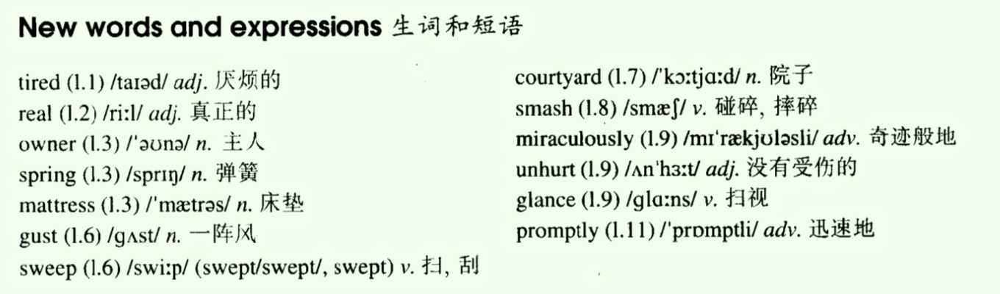
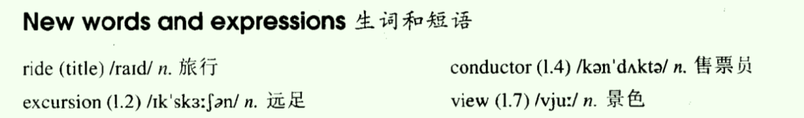
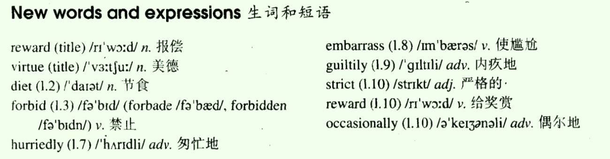
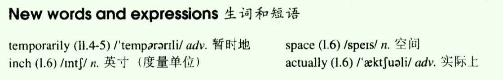
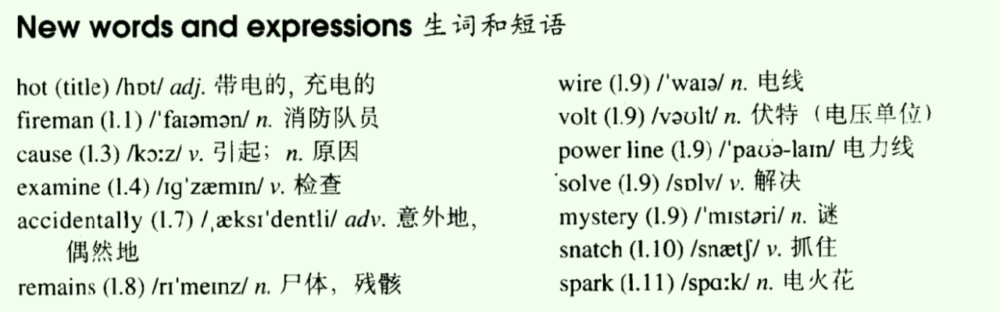
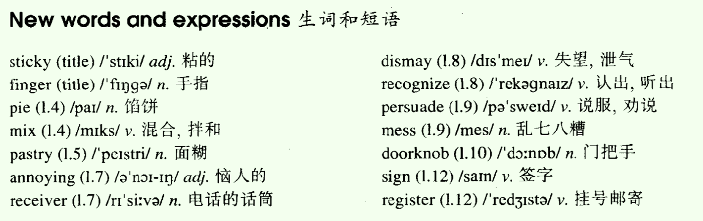
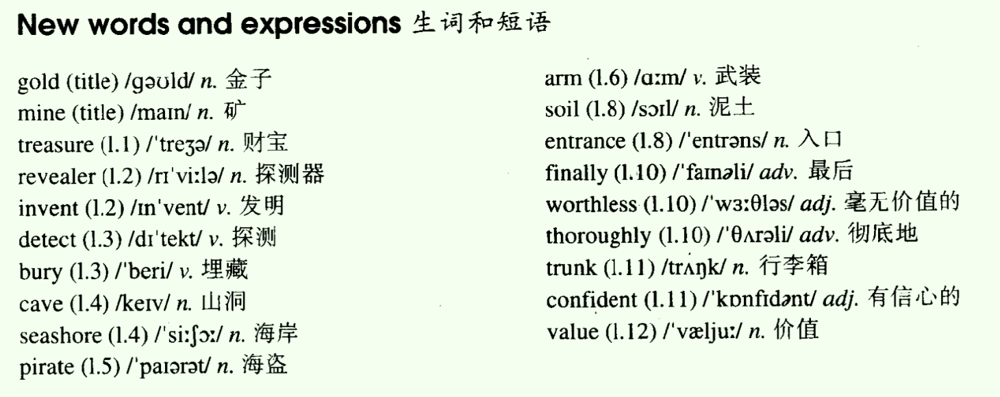
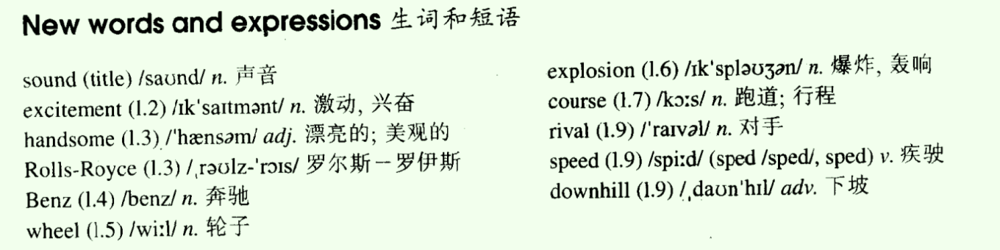

- Lesson 49 The end of a dream
- Lesson 50 Taken for a ride
- Lesson 51 Reward for virtue
- Lesson 52 A pretty carpet
- Lesson 53 Hot snake
- Lesson 54 Sticky fingers
- Lesson 55 Not a gold mine
- Lesson 56 Faster than sound!
Lesson 49 The end of a dream
一、单词讲解
1、tired：adj. 厌烦的、劳累的；
- be tired of ...
- We were tired of English/studying English.
2、spring：n. 弹簧、春天、（天然的）泉；
3、gust：n. 一阵风；
- a gust of wind
4、sweep：v. 扫、刮；
- sweep、swept、swept
- sleep、slept、slept
- keep、kept、kept
- creep、crept、crept
5、smash：v. 碰碎、摔碎；
- smash sth. to/in pieces：把...摔成碎片
6、miraculously：adv. 奇迹般地；
- miracle：n.
- miraculous：adj.
7、glance：v. 扫视；
- glance at ...
8、promptly：adv. 迅速地；
- fast、quickly、rapidly、fleetly、swiftly
All

二、课文&语法讲解
1、本文重点
- 复习句子
- 分词作状语（源于状语的省略）
2、分词作状语
- 分词：doing、done
- 作状语：修饰动词、句子，表示描述性的信息（不是状态）；
- 来源：状语从句的省略（此时就不是一个两个句子了，而是一个句子，只能有一个谓语）
- While he was talking with me, he broke his cup carelessly.
- 时间状语从句，主句
- 主语相同，将主要的保留，故将从句的he省略；was talking中有两个动词，was没有什么意思也省略
- While talking with me, he broke his cup carelessly.
- Talking with me, he broke his cup carelessly. 将while省略，根据上下文理解，也能知道这两件事是时间上的关联；分词作状语
- doing分词，作状语（修饰句子），表示主动（相对于主句的主语）；
- Because he was punished, she burst into tears.
- 原因状语从句，主句
- Because punished, she burst into tears.
- punished, she burst into tears.
- done分词，作状语（修饰句子），表示被动（相对于主句的主语）；
- 注意：若从句和主句的主语不同，则不能省略，不能变成分词作状语了；
- While he was talking with me, he broke his cup carelessly.
- 练习
- Because he was tired of sleeping on the floor, a young men saved up for years to buy a real bed.
- 这里，从句的was不能省略，因为没有其他动词了（tried为形容词）；
- 主动的厌烦，不是被动的，所以was要变主动（先变原形，再变成doing）
- Being tired of sleeping on the floor, a young men saved up for years to buy a real bed. 主动
- Tired of sleeping on the floor, a young men saved up for years to buy a real bed. Being没有实际意思，课文中将其也省略了
- After the man glanced at the bits of wood and metal, the man sadly picked up the mattress.
- Glancing at the bits of wood and metal, the man sadly picked up the mattress. 主动
- Because the weather was very hot, he carried the bed to the roof ...
- 主语不能，不能省略，不能变成分词作状语
- Because he was tired of sleeping on the floor, a young men saved up for years to buy a real bed.
- 总结一下
- 两件事主语相同；一件事写成句子，另一件事写成分词作状语；
- 我走进教室，拿着一个包。
- I walked into the classroom, taking a bag.
- 我走进教室，我被五个学生跟着。
- I walked into the classroom, followed by five students. 被动的发出者by
- 三件事
- I walked into the classroom, taking a bag, followed by five students.
- 我走进教室，拿着一个包。
- 两件事主语相同；一件事写成句子，另一件事写成分词作状语；
3、课文
- How did the dream end?
- Tired of sleeping on the floor, a young man saved up for years to buy a real bed.
- be tired of：“对...感到厌倦”
- (Being) tired of sleeping on the floor, a young man saved up ...：这里省略了现在分词being；原因状语
- to do：表示目的
- save up：攒钱
- For the first time in his life, he became the proud owner of a bed which had springs and a mattress. 定语从句
- Because the weather was very hot, he carried the bed on to the roof of his house. 原因状语从句
- He slept very well for the first two nights, but on the third night, a storm blew up.
- blow up：（指暴风雨）出现并加剧，刮起；（blow：vt.风吹）
- A gust of wind swept the bed off the roof and send it crashing into the courtyard below. 并列句（句子之间一样重要）
- crashing into the courtyard below：现在分词短语，作宾语补足语；
- The young man did not wake up until the bed had struck the ground. 时间状语从句 （strike）
- Although the bed was smashed to pieces, the man was miraculously unhurt. 让步状语从句
- When he woke up, he was still on the mattress. 时间状语从句
- Waking up, he was still on the mattress
- Glancing at the bits of wood and metal that lay around him, 定语从句
- the man sadly picked up the mattress and carried it into his house.
- After he had put it on the floor, he promptly went to sleep again.
- (After) putting it on the floor, he promptly went to sleep again. 不需要考虑之前从句的时态
三、知识扩展
1、分词（现在分词、过去分词）
- 分词作定语（修饰名词）：L21
- a passing plane
- a used car
- 分词作状语（修饰句子）：L49
- Talking with me, he broke his cup carelessly.
- punished, she burst into tears.
- 相同点：doing分词表示主动；done分词表示被动；
- 不同点：作定语，修饰n.（参照物：n.）；作状语，修饰句子（参照物：句子主语）；
- She walked int a room, smiling (smile).
- 就近：smile room ???
- 就远：smile she ???
- She bought a used (use) car.
- 就近：use car ???
- 分词作定语（修饰名词）：L21
2、分词作定语、分词作状语 ==》非谓语动词
- What：
- 还是动词，但是不作谓语，作什么成分都行（定语、状语最常见）；
- 为什么不作谓语了，因为已经有谓语了；（一夫一妻制，娶妻（一个）纳妾（多个））
- When：
- 当一主一谓搭配好后，多余的动词一律变成“非谓语”；
- How：
- 有三种形式：doing（主动；还可以表示动名词，当做名词来用L20、L44）、done（被动）、to do（表示目的）；
- 这三种形式单独出现才是非谓语动词（比如：be doing中的doing构成了进行时，作谓语）；
- 非谓语的使用
- a. 先判断要不要使用非谓语（已经有谓语了）；
- b. 找到参照物名词（就近、就远）；
- c. 根据参照物，判断主动、被动、还是目的；
- The parents are looking at the sleeping (sleep) baby.
- The teacher went in the classroom, holding (holding) a book in his hand, followed (follow) by five student, to teach (teach) Chinese.
- 技巧：
- a book：一个词组，hold在该词组外部，不是一家人，故不修饰book；
- the baby：一个词组，sleep在该词组内部，是一家人，故修饰baby；
- by five student：被动；
- 技巧：
- What：
Lesson 50 Taken for a ride
一、单词讲解
1、ride
- v. 骑、搭乘；ride a bicycle / horse
- take (sb.) for a ride：开车带某人兜风、欺骗（忽悠）某人；
- Sb. be taken for a ribe
2、excursion：n. 远足；
- go on an excursion：去远足
3、view：n. 景色、观点；
- have a good view of ...：欣赏...美景
- block the view
- a room with a view (of the sea) 海景房
- in my view / opinion
All

二、课文&语法讲解
1、本文重点
- 复习非谓语动词的用法（doing、done、to do）
- 宾语从句的省略
- take：表示“花费”
- prefer：表示“更喜欢”
2、课文
- Taken for ride
- take ... for ...：把...当作...，因此take for a ride可以翻译成“就当作一次乘车兜风”
- take sb. for ride：“欺骗”
- Why did the writer not get off the bus at Woodford Green?
- I love travelling in the country, but I don't like losing my way.
- 已经有谓语love，不再需要谓语了，travelling使用动名词形式作宾语，losing my way同理；非谓语动词的用法；
- I went on an excursion recently, but my trip took me longer than I expected.
- take：v. 花费；
- 主语为事、物，多半指时间、勇气、努力、精力，比较抽闲的概念，而不是钱；
- 常用结构：
- sth. take (sb.) some time
- （takes、took、will take、have taken ...）
- The recovery took her three years.
- The recovery took her longer than she expected.
- To do sth. takes sb. some time 头重脚轻
- = It takes sb. some time to do sth. 推荐
- 去劝说她花费了我10分钟（过去）。
- It took me ten minutes to persuade her.
- It will take me one hour to finish homework.
- sth. take (sb.) some time
- spend：主语为人；
- cost：主语为事、物，多半指花钱、代价；
- take：v. 花费；
- 'I'm going to Woodford Green,' I said to the conductor as I got on the bus, 'but I don't know where it is.'
- get on/off the bus：上下车
- 宾语从句
- 'I'll tell you where to get off,' answered the conductor.
- she said, + '说话的内容（在后）'
- '说话的内容（在前）' said she；动作挨着内容；
- 说话的内容前后都有，哪种形式都可以；
- where to get off：
- I'll tell you where you should get off. 核心内容
- 宾语从句的省略： wh-/how to do，突出重点
- I do not know when we will set out.
- I do not know when to set out.
- Making Love Out Of Nothing At All 歌词
- I know just how to whisper
- and I know just how to cry.
- I know just where to find the answers
- and I know just how to lie.
- I know just how to fake it
- and I know just how to scheme.
- I know just when to face the truth
- and the I know just when to dream.
- And I know just where to touch you
- and I know just what to prove.
- I know when to pull you closer
- and I know when to let you loose.
- I sat in the front of the bus to get a good view of the countryside.
- to do（非谓语动词，表示目的），作状语
- in the front of
- I sat in the front of the bus.
- in front of
- ... my wife was still in front of the mirror.
- After some time, the bus stopped.
- Looking (look) round, I realized with a shock that I was the only passenger left (leave) on the bus.
- 非谓语
- leave：被动，被落下的，left；
- 'You'll have to get off here,' the conductor said. 'This is as far as we go.'
- as ... as ...：L32，原级比较
- 'Is this Woodford Green?' I asked.
- 'Oh dear,' said the conductor suddenly. 'I forgot to put you off.'
- forget to do sth.：忘记了去做某事（没做的）
- forget doing sth.：忘记做过某事（做完的）
- 'It doesn't matter,' I said, 'I'll get off here.'
- 'We're going back now,' said the conductor.
- '_Well_, in that case, I prefer to stay on the bus,' I answered.
- well：这里（口语中）表示发语词，不表示“好”；
- prefer
- 更喜欢...（比较对象）
- ~ n. (to n.)
- ~ doing sth. (to doing sth.)
- ~ to do sth. (rather than do sth.)
- ~ 从句
- Taken for ride
三、知识扩展
- 1、非谓语动词 作定语/状语
- The networked (network：联网) computer is an amazing device.
- The students studying (study) together in the library were preparing for the final exams.
- 非谓语动词放到句子中作成分的时候，不一定只有一个单词，有可能是一个长长的词组（如doing sth，还可能加介词短语表示时间地点范围等）；
- studying together in the library
- Her plan to travel (travel) around the world will come true soon.
- To promote (promote) the new products, he had tried every means.
- Selected (select) as an astronaut by NASA in 1990, Dr. Ellen spent over 719 hours in space on the flights.
- Visiting (visit) Paris two hundred years ago, you would have seen a very different city.
Lesson 51 Reward for virtue
一、单词讲解
1、reward：
- n. 报偿；
- v. 给奖赏；
- reward sb.
- reward oneself
- You worked so hard, and you need to reward yourself occasionally.
2、virtue：美德；
3、diet：n. 节食；
- go on a diet / begin a diet：进行/开始节食
- be on a diet
- I am on diet now. 我现在正在节食。
4、hurriedly：adv. 匆忙地；
- do sth. hurriedly
- hurry：v. 匆忙
- hurry to sp.
5、embarrass v. 使尴尬；“使” => 及物动词
- You embarrass me.
- I am embarrassed.
- embarrassed：adj. 尴尬的；
- embarrassing：adj. 使人感激的；
- 来着的动词的变化
- ed结尾的形容词，通常表示本身感觉怎么的；
- ing结尾的形容词，通常表示令别人感觉怎么的；
6、guiltily：adv. 内疚地；
- guilt：n.
- guilty：adj. 有罪的；内疚的；
7、occasionally：adv. 偶尔地
- occasion：n.
- occasional：adj.
All

二、课文&语法讲解
- 1、课文
- Why did Hugh's diet not work?
- My friend, Hugh, has always been fat, but things got so bad recently that he decided to go on a diet.
- has been：从过去到现在都胖（一直胖）；
- get、got、got/gotten
- get bad：变得糟糕了
- go on a diet
- decide to do
- so ... that ...：想判断是什么从句，往前看，看挨着谁，that引导结果状语从句；“太...所以...”
- The story is interesting. I want to share it wit you.
- The story is so interesting that I want to share it wit you.
- The story is interesting. I want to share it wit you.
- He began his diet a week ago.
- First of all, he wrote out a long list of all foods which were forbidden.
- first of all：首先，起初
- write、wrote、written：w不发音
- The list include most of the things Hugh loves : butter, potatoes, rice, beer, milk, chocolate, and sweets.
- 定语从句中，关系词作宾语可以省略；
- “名词 + 从句，中间无关系词”就是定语从句；
- “名词 + 从句”可能是同位语从句，但是同位语从句的关系词都不能省略；
- Yesterday I paid him a visit.
- pay
- pay sb. a visit = visit sb. 拜访某人
- 英语中，越长的越正式；
- I rang the bell and was not surprised to see that Hugh was still as fat as ever.
- ring、rang、rung
- ring the bell：按响了门铃
- be surprised to do sth. 惊讶作某事
- as ... as ...：L32，同级原级比较
- as ever：实际上是状语从句as he ever was的省略形式；
- He led me into his room and hurriedly hid a large parcel under his desk.
- lead、led、led
- hide、hid、hidden
- It was obvious that he was very embarrassed.
- = That he was very embarrassed was obvious.
- 主语从句：L43，主语从句前面的that是不能省略的；
- When I asked him what he was doing, he smiled guiltily and then put the parcel on the desk.
- 宾语从句
- He explained that his diet was so strict that he had to reward himself occasionally.
- Then he showed me the contents of the parcel.
- show sb. sth.
- contents：n. 内有的物品
- the contents of ...
- It contained five large bars of chocolate and three bags of sweets!
三、知识扩展
1、长难句拆解
- My friend, Hugh, has always been fat, but things got so bad recently that he decided to go on a diet.
- My friend, Hugh：同位语
- has been：现在完成时
- but：并列句（表示转折）
- so ... that ...：结果状语从句
- 词组：get bed、decide to do、go on a diet
I rang the bell and was not surprised to see that Hugh was still as fat as ever.
- 词组：ring the bell、be surprise to do
- and：并列句
- see that ...：宾语从句
- as ... as ...：同级比较
2、从句嵌套从句
- When I asked him what he was doing, he smiled ...
- 陈述句中只要出现了特殊疑问词，就一定引导从句；
- 时间状语从句 + 宾语从句
- He explained that his diet was so strict that he had to ...
- 宾语从句 + 结果状语从句
- When I asked him what he was doing, he smiled ...
- My friend, Hugh, has always been fat, but things got so bad recently that he decided to go on a diet.
Lesson 52 A pretty carpet
一、单词讲解
1、temporarily：adv. 暂时地；
- do sth. temporarily
- temporary：adj. 暂时的、临时的、短期的；
- a temporary job
2、inch：n. 英寸（度量单位）
- 12 inches = 1 foot（英尺） = 0.3048 metre
- 3 feet = 1 yard（码）
3、actually
- = in fact
All

二、课文&语法讲解
1、本文重点
- 现在完成时
- 现在完成进行时
2、现在完成时、现在完成进行时对比
- 现在完成时
- 形式：have/has done
- 用法：表示 现在的之前 ，强调事情 完成的结果（做完、没做完都可以）
- We have not won the match.
- 现在完成进行时
- 形式：have/has been doing
- 用法：表示 现在的之前 ，强调事情 持续（一直持续的(最常用)、断断续续的）进行的过程
- We have been working hard for several months.
- I have been studying English all morning.
- It has been raining for a week. 天气作主语，使用it
- We have been living here since I was born.
- 现在完成时
3、课文
- What is the writer's carpet made of?
- We have just move into a new house and I have been working hard all morning.
- I have been trying to get my new room in order.
- try to do sth.
- get sth. in order
- This has not been easy because I own over a thousand books. 一直都不容易
- 比较：
- This was not easy.
- This is not easy.
- 比较：
- To make matters worse, the room is rather small, so I have temporarily put my books on the floor.
- to make matters worse：更糟糕的是
- rather：这里相当于very
- 副词：修饰动词时，可以放到动词后面，也可以放在前面（助动词之后，实义动词之前）；修饰句子时，可以放在句首、句尾；
- At the moment, they cover every inch of floor space and I actually have to walk on them to get in or out of room.
- A short while ago, my sister helped me to carry one of my old bookcases up the stairs.
- help sb. to (do) sth.：帮助某人做某事
- up the stair s ：上楼（固定搭配）
- She went into room and got a big surprise when she saw all those books on the floor.
- 'This is the prettiest carpet I have ever seen,' she said.
- L28：It is one of the ugliest face I have ever seen.
- 定语从句中，先行词名词有最高级修饰时，通常表示特指，关系词只能使用that或省略，不能使用which、who；
- 定语从句和最高级搭配，表示最高级的范围；
- 现在完成
- ... so it will soon be sending us the clearest pictures ... that we have ever seen.
- You are the most beautiful girl I have ever seen.
- This is the most exciting news we have ever heard.
- L28：It is one of the ugliest face I have ever seen.
- She gazed at it for some time then added, 'You don't need bookcases at all. You can sit here in your space time and read the carpet!'
三、知识扩展
- 1、现在完成时、现在完成进行时
- I have read (read) this chapter in my chemistry book, and I still don't understand it!
- I have been reading (read) for two hours. I think I'll take a break.
- take a break：休息一下
- A: The baby has been crying (cry) for almost ten minutes.
- B: Okey. I'll go into his room and see if anything's wrong.
- I have stayed (stay) there at least a dozen times. It's my favorite hotel.
Lesson 53 Hot snake
一、单词讲解
1、cause
- v. 引起； Carelessness causes accidents.
- n. 起因； the cause of the fire
2、examine：v. 检查（通常强调详细的内容）
- examiner：n. 主考官；
- examination：n. 检查，考试（简写exam）
3、accidentally：adv. 意外地、偶然地；
- do sth. accidentally
- do sth. by accident
- do sth. by chance
- accident：n. 意外、巧合、事故；
- accidental：adj.
4、remains：n. 所有保持、保留下来的东西，如尸体、残骸、古迹等；
- remain：v. 保持、保留；
- remain silent：保持沉默；remain + 形容词，表示保持某种状态
5、wire：n. 电线；
- wireless：adj. 无线的；
- wireless network/mouse/keyboard
6、solve：v. 解决；
- solve the mystery
- solve the problem of ...
- solve the problem of air pollution/ earthquake
All

二、课文&语法讲解
1、本文重点
- 一般过去时（did）L3
- I stayed in China 10 years ago.
- 现在完成时（have/has done）L4、L5、L29
- Have you ever stayed in China?
- 现在完成进行时（have/has been doing）L52
- I have been staying in China for 10 years.
- 一般过去时（did）L3
2、课文
- What caused the fire?
- At last fireman have put (put) out big forest fire in California.
- put out fire：扑灭了火；
- Since then, they have been trying (try) to find out how the fire began.
- Forest fires are often caused by broken glass or by cigarette ends which people carelessly throw away.
- forest fire s
- cigarette end s ：烟头
- 名词修饰名词，复数通常后变前不变；特殊：women teachers都变；
- 被动语态；
- 这里表示泛指，所以使用一般现在时；
- throw sth. away
- Yesterday the fireman examined the ground carefully, but were not able to find any broken glass.
- They were also quite sure that a cigarette and did not start the fire.
- be sure that ...：L26，形容词+从句，宾语从句；
- This morning, however, a fireman accidentally discovered the cause.
- He noticed the remains of a snake which was wound round the electric wires of a 16,000-volt power line.
- the remains of a snake：表示属性，表示“名词2 的 名词1”
- the electric wires of a 16,000-volt power line
- wind、wound、wound：L27，n. 风；v. 弯曲
- wind round ...：弯曲围绕着...
- n. + 从句：
- 定语从句（修饰限定n.；任意名词后）、同位语从句（解释说明n.；抽象名词后）区分：L46
- ... he become the ... owner of a bed which had springs ... L49
- In this way, he was able to solve the mystery.
- in this way：就这样
- The explanation was simple but very unusual.
- ex plain ：v.
- ex plan ation：n.
- express：v.
- expression：n.
- A bird had snatched up the snake from the ground and the dropped it on to the wire.
- dropped it on to the wire
- on：表示一直在上面；
- on to、onto：表示别的地方“变化”到上面，有一个动作变化的过程；
- The snake the wound itself around the wires.
- When it did so, it sent sparks down to the ground and these immediately stared a fire.
- so：这里不是连接句子，而是一个代词，用于指代说明上文的内容，表示“如此这样”；
- I think/guess/believe so.
- so：这里不是连接句子，而是一个代词，用于指代说明上文的内容，表示“如此这样”；
三、知识扩展
- 1、现在完成时、现在完成进行时（强调没有做完的，还进行，从过去持续进行到现在的事；强调过程；）
- 我们学习英语十年了。
- I have been learning English for 10 years.
- 他们现在已经在这个项目上工作了好几个星期。
- They have been working on the project for weeks.
- 我已经等了你好长时间。
- I have been waiting for you for ages. 夸张的说法，等了好几个时代了。
- The manager C the workers how to improve the program since 9 am.
- A. has told；B. is telling；C. has been telling；D. will have told；
- In order to find the missing child, villagers D all they can cover the past five hours.
- A. did；B. do；C. had done；D. have been doing；
- Tom C in the library every night over the last three months.
- A. works；B. worked；C. has been working；D. had been working；
- 我们学习英语十年了。
Lesson 54 Sticky fingers
一、单词讲解
1、sticky：adj. 粘的；
- sticky fingers：黏糊糊的手指；
- sticky weather：闷热的天气；抽象的“粘”
- stick：v. 粘贴；n. 棍子；
2、annoying：adj. 恼人的；
3、persuade：v. 说服、劝说；
- persuade sb. (not) to do sth. 劝说某人（不）做某事
- persuade sb. into doing sth. 劝说某人做某事
- persuade sb. out of doing sth. 劝说某人不做某事
4、mess：n. 乱七八糟；
- What a mess! L2：感叹句；
- make a mess (of ...)：弄乱...
- be in a mess：处于混乱；
5、sign：v. 签名；n. 指示牌，符号；
- sign your name here
- signture：n. 签名；
- sign a contract
All

二、课文&语法讲解
- 1、课文
- What two interruptions did the writer have?
- After breakfast, I sent the children to school and then I went to the shops.
- 三餐前不加任何冠词（a、the），meal可以加
- It was still early when I returned home.
- The children were at school, my husband as at work and house was quiet.
- school加了a、the，表示正常的名词含义，不加则表示抽象的概念；
- go a/the school：去学校
- go school：去上学
- school加了a、the，表示正常的名词含义，不加则表示抽象的概念；
- So I decided to make some meat pies.
- In a short time I was busy mixing butter and flour and my hands were soon covered with sticky pastry.
- be busy doing sth.
- be covered with ...
- flower：花；flour：面粉；
- At exactly that moment, the telephone rang.
- at exactly that moment：恰好在那个时刻；exactly：恰好地，精确地；
- _Nothing_ could have been more annoying.
- 没有什么能更令人烦恼了；
- 形式上是比较级，意思是最高级；原因：比较级加上了否定词，意思上就相当于最高级；L56
- I picked up the receiver between two sticky fingers and was dismayed when I recognized the voice of Helen Bates.
- pick up / hang up 接、挂 （电话）
- It took me ten minutes to persuade her to ring back later.
- ring back
- _To do sth._ take sb. some time (L50)
- = It takes sb. some time to do sth.
- At last I hung up the receiver.
- What a mess!
- There was pastry on my fingers, on the telephone, and on the doorknobs.
- There be 句型
- I had no sooner got back to the kitchen than the doorbell rang loud enough to wake the dead.
- no sooner ... than ...：一 ...，就 ... L38
- enough：
- 作形容词，可以放名词前或后；
- I have enough time / time enough.
- 作副词，修饰形容词、副词，放在后面；
- good enough
- 作形容词，可以放名词前或后；
- the + 形容词，表示一类（人、事物）；
- the dead
- the living
- the rich
- the poor
- loud enough to wake the dead：作状语，修饰ring；
- This time was the postman and he wanted me to sign for a registered letter!
- a registered letter：挂号信
三、知识扩展
- 1、补充内容
- I go to school.
- I go to the school to pick up my friends.
- 如果一个名词是可数名词，那么其的单数前面一定要加上限定的词（如a、the、谁的），进行限定，这是语法规定。若是什么都不加则表示一个抽象的含义。
- I sent the children to school. 去上学
- The children were at school ...
- They went to church.
- They went to the church.
- He went to hospital.
- He went to the hospital to see someone.
Lesson 55 Not a gold mine
一、单词讲解
1、mine：n. 矿；
- mineral：
- n. 矿物质；
- adj. 矿物质的；mineral water
- mineral：
2、revealer：n. 探测器；
- reveal：v.；
3、invent：v. 发明；
- discover：v. 发现；
4、detect：v. 探测；
- detective：n. 侦探；
5、seashore：n. 海岸；
- shore；
- coast：L33；
6、pirate：n. 海盗；
- Pirates of the Caribbean
- n. 盗版；
- pirate books/software
7、entrance：n. 入口；
- enter：v. 进入；
- exit：n. 出口；
8、confiden t ：adj. 有信心的；
- confiden ce ：n. 信心；
- self-confident：adj. 有自信心的；
- self-confidence：n. 自信心；
All

二、课文&语法讲解
1、本文重点
- 复习分析句子
- 复习非谓语（L49）
- used to do / would do
2、课文
- What did the team find?
- Dreams of finding lost treasure almost came true recently.
- Dreams （主语） come （谓语v.） true recently. 一主一谓
- of finding 、 lost treasure：非谓语动词v.，依次为finding动名词（介宾结构）、lost过去分词（表示被动）；
- A new machine called 'The Revealer' has been invented and it has been used to detect gold which has been buried in the ground.
- _A new machine_ （主语） called 'The Revealer' （非谓语v.） has been invented （谓语v.）
- 现在完成时的被动；
- and it has been used （主语+谓语v.） to detect gold （非谓语v.）
- 现在完成时的被动；
- which（主语） has been buried （谓语v.） in the ground.
- 现在完成时的被动；
- _A new machine_ （主语） called 'The Revealer' （非谓语v.） has been invented （谓语v.）
- The machine was used in a cave near the seashore where -- it is say -- pirates used to hide gold.
- it is say：这里是插入语；
- used to do sth.：过去常常做某事，现在不再这样做了，L31；
- The pirates would often bury gold in the cave and then fail to collect it.
- collect：收集、募集、领走取走；
- fail to do：失败做某事（没有做到），L16；
- would do sth：过去常常做某事，通常强调反复性，常和频率词连用；其他情况可以和used to do 互换；
- （Arm） with the new machine, a search party went int the the cave, （hope） （find） （bury） treasure. L49；
- Armed（被武装） with the new machine,（非谓语v.；这里过去分词短语作状语，表示伴随状态）
- a search party went int the the cave, （主+谓语）
- hoping to finding buried treasure.（非谓语v.；这里现在分词短语作状语，表示目的）
- The leader of the party was examining the soil near the entrance to the cave when the machine showed that there was gold under the ground.
- Very excited, the party dug a hole two feet deep.
- a hole two feet deep：两英尺深的洞
- They finally found a small gold coin which was almost worthless.
- The party then searched the whole cave thoroughly but did not find anything except an empty tin trunk.
- In spite of this, many people are confident that 'The Revealer' may reveal something of value fairly soon.
- _confident（形容词）_ that ...：这里是宾语从句；
三、知识扩展
1、In spite of this, many people are confident that 'The Revealer' may reveal something of value fairly soon.
- of + 抽象名词 = 对应的adj.
- something of value = something valuable
- of great value = very valuable
- of great difference = very different
- of great importance = very important
- 写作替换：
- Chinese and English are very different.
- Chinese and English are of great difference.
- Studying English is very important.
- Studying English is of great importance.
- Chinese and English are very different.
2、复习非谓语动词
- After （have） lunch,
- the little girl went into a shop,
- （take） a （use） plastic bag, 塑料袋
- （buy） some food.
- After having lunch,
- the little girl went into a shop,
- taking a used plastic bag,
- to buy some food.
Lesson 56 Faster than sound!
一、单词讲解
1、sound：n. （各种的）声音；
- 比较voice（人的声音）、noise（噪声）；
- v. 听起来；
- That sounds like a good idea.
2、handsome：adj. 漂亮的、美观的；（男性）
- beautiful：（女性）
- pretty：（女性）
- good-looking：（男性女性通用）
3、explosion：n. 爆炸、轰响；
- explosive：n. 炸药；adj. 易爆炸的；
4、course：n. 跑道、行程、课程、一道菜；
- on/off the course
5、speed：n. 速度；
- drive at the speed of ...
- reach/keep a speed of ...
- v. 疾驶、加速；
- speed、sped、sped
- The ambulance sped to the hospital.
- speed up / slow down：加速、减速
All

二、课文&语法讲解
1、本文重点
- 复习表示比较的方式（比较级、最高级、原级比较）
- 比较级表示最高级的含义
- 其他表示比较的词组
2、课文
- How fast did the winning car go?
- Once a year, a race is held for old cars.
- A lot of cars entered for this race last year and there was a great deal of excitement just before it began.
- a lot of：可接可数名词复数和不可数名词
- a great deal of：只能接不可数名词
- enter for：报名参加
- 抽象意义上的名词，多半不可数，如excitement；
- One of the most handsome cars was a Rolls-Royce Silver Ghost.
- 最高级
- The most unusual car was a Benz which had only three wheels.
- _Built_ in 1885, it was the oldest car taking part.
- 一主一谓已经有了，所以使用非谓语动词（过去分词Built、现在分词taking）；
- After a great many loud explosions, the race began.
- a great many：只能接可数名词复数
- 修饰可数名词复数：
- many
- a great many
- a number of
- a large number of
- 修饰不可数名词：
- much
- a great deal of
- 两者都可以修饰：
- a lot of
- Many of the cars broke down on the course and some drivers spent more time under their car than in them!
- break down：出现故障，抛锚了；
- A few cars, however, completed the race.
- The winning car reached a speed of forty miles an hour -- much faster than any of its rivals.
- much修饰比较级faster；
- faster than any
- 比较级表示最高级的含义：
- a. 比较级 + than any ...
- b. 比较级 + 否定
- Nothing could have been more annoying.
- I can't love you more.
- I can't agree with you more.
- Health is the most important thing.
- Health is more important than anything.
- Nothing is more important than health.
- French is the most difficult language in the world.
- French is more difficult than any other language.
- 当被比较的对象中包含自己时，需要将自己排除出去，使用other；
- No language is more difficult than French.
- French is more difficult than any other language.
- It sped downhill at the end of the race and its driver had a lot of trouble trying to stop it.
- sped downhill：疾速下坡
- have trouble doing sth.：L28
- try to do sth
- The race gave everyone a great deal of pleasure.
- It was very different from modern car races but no less exciting.
- no less = no more：不多不少，一样的；
- but no less exciting：省略句，完整的句子为but it was no less exciting than modern car races.
- 表示比较的词组：
- be different from ...：不同
- be the same as ...：相同（相同有种特指的含义，所以加the）
- be similar to ...：相似
三、知识扩展
1、补充内容：表示“许多”的词
- 修饰可数名词复数：
- many
- a great many
- a number of
- a large number of
- 修饰不可数名词：
- much
- a great deal of
- 两者都可以修饰：
- a lot of
- 修饰可数名词复数：
2、补充内容：其他表示数量“多少”的词；
- There aren't many apples, but you can pick a few.
- 修饰可数名词复数；表示“一些“，是一个”积极“词；
- 集合名词
- a. 以单数形式出现，但实为复数；如people、police、cattle等，本身就是复数；
- b. 不能说a people/police/cattle，但是可以说a person、a policeman、a head of cattle；
- c. 集合名词后接动词一律都是复数；不可数名词后面使用单数；
集合名词只是没有单复数形式而已，并不是不可数，故不可以将其归入不可数名词中；
- people
- a. 当people指人时，为集合名词；
- Who
arethese people?
- Who
- b. 当people指民族时，就变成了可数名词；
- There are 56 peoples in China. 中国有56个民族。
- a people：一个民族
- The Chinese are
a great people.
- a. 当people指人时，为集合名词；
- 补充：表示国民总称时，English（英国人）、Chinese（中国人）等当作复数用；如：
- The Chinese are industries and brave. 中国人民是勤劳勇敢的。
- 对比：He is a Chinese. 他是一个中国人。
- There were few people in the cafe.
- 修饰可数名词复数；表示“没剩下几个“，是一个”否定消极“的词；
- people虽然是集合名词，单数可以理解成可数名词；
- A few cars, however, completed the race.
- There isn't mush water, but you can have a little.
- 修饰不可数名词；同上；
- There is little I can do for you.
- There aren't many apples, but you can pick a few.